perfsonarUI is a web application for running and visualizing on-demand tests between perfSONAR measurement points (MPs) or visualizing historical measurement results obtained from perfSONAR measurement archives (MAs). It is designed to be intuitive and user friendly, thus allowing the network operator the troubleshoot network problems as efficiently as possible. The application functionality itself is realized through several plugins, one for each supported type of measurement. In the current version, perfsonarUI supports fetching stored interface utilization data, one-way delay data, jitter data, one-way packet loss data, hop count information data and achievable throughput data. This data is stored in perfSONAR MAs and represents results of regularly scheduled measurements which are performed automatically. The UI also offers the possibility of requesting an on-demand measurement of achievable throughput or one-way latency between two perfSONAR MPs. In the future other types of measurements will be added to the UI in the form of new plugin panels.
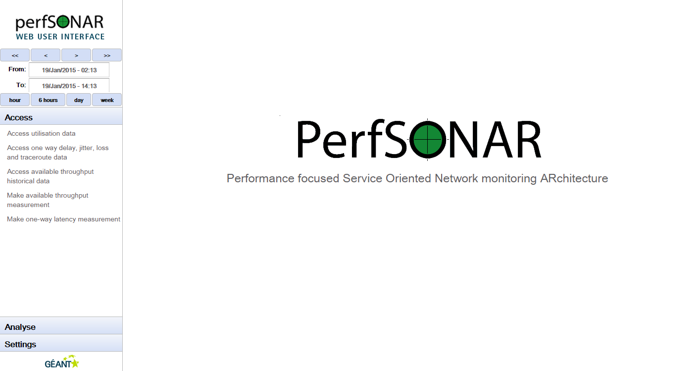
perfsonarUI also supports using historical data from multiple MAs to visualize path segment utilization for a given traceroute output.
The current release of perfsonarUI has been tested with the following perfSONAR components:
If a particular component version is not included in this document it may still be compatible with perfsonarUI but has not been tested.
In addition perfsonarUI is also able to retrieve data from the old perfSONAR Toolkit, v3.3.1, SNMP MA and perfSONAR-BUOY MA. It is also able to make on-demand tests to bwctl endpoint such as perfSONAR Toolkit BWCTL and one-way latency measurement between a perfSONAR OWAMP MP and another owamp endpoint (such as perfSONAR Toolkit OWAMP endpoints).
perfsonarUI is available through any modern web browser. We recommend using latest versions of Mozilla Firefox, Google Chrome, Safari and Opera. Accessing the application through Internet Explorer 9-11 is not tested, but should be operational. Accessing the application through Internet Explorer 8 is very limited – charts are not functional at all in IE8 and also there are several issues with style rendering such as element color, position, font type and size and more. For that reason accessing perfsonarUI through Internet Explorer versions 8, 7, 6 and lesser is not supported. To access your instance perform the following procedure:
Minimum recommended screen resolution is 1024x768 pixels.
Note
It is possible to change these credentials or add additional ones by modifying the /usr/share/perfsonar-ui-web/perfsonar-ui/WEB-INF/classes/usersdetails.xml file. Each newly defined username should be in the role ROLE_USER since this is currently the only role supported by perfsonarUI. The ROLE_USER role allows full access to the application. A more sophisticated control over user roles and credentials will be implemented in future versions of the application. To produce MD5 hash of the desired password use an MD5 hash generator. You can do it easily on the Linux CLI with a command such as echo -n “password” | md5sum. After finishing changes in usersdetails.xml file you need to restart the Tomcat service.
The application main window is organized in two main sections: time window selection with navigation on the left side of the screen and the plugin content panel on the right. Time window selection, located in the top left part of the screen, allows the user to select a common time window. This time window will be used when querying historical measurement data.
The start and the end of the time window can be selected manually by clicking on the corresponding input field and selecting date and time from a pop-up. It is also possible to select one of pre-defined time windows. These are (last) hour, (last) 6 hours, (last) day and (last) week. Selection of these intervals is done by simply clicking the corresponding button in the bottom row. These intervals are relative to the current time, meaning that the end of the time window is set to current time and beginning is set according to the interval duration. Using the top row of buttons the user can shift the current time window backwards and forwards. Buttons << and >> shift the time window backwards and forwards for its duration, while buttons < and > shift for half of time window duration.
The navigation panel is located below the time window selection and currently has three sections. The Access section is used for plugin selection, Analyze section is used for analyzing traceroutes and cross-referencing them with perfSONAR measurements, while the Settings section is used to configure the UI itself.
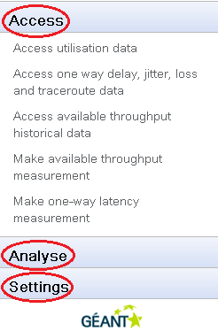Each perfsonarUI plugin requires a perfSONAR service (Measurement Point or Measurement Archive) or endpoint (like bwctl or owamp) to be selected from the list of preconfigured services specific to that particular plugin (refer to section Configuration Of the UI - for more information about configuring service list). Selecting desired service for querying is done via service selection dialog.
In order to select a particular service, perform the following steps:
See also
See section Filtering and Ordering Services for more information on filtering.
Measurement Archive selection window
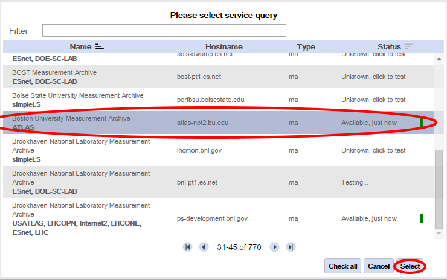Measurement Point selection window
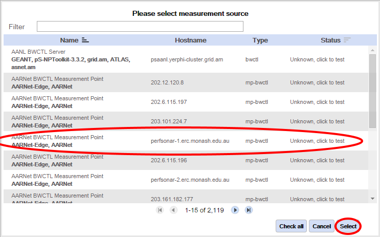
It is also possible to check if the service is reachable to the perfsonarUI and available for queries. In order to verify a particular service’s reachability perform the following steps:
Note
For some service types it is not possible to determine their availability. In that case the status message will be Unable to test.
Services can be quickly filtered. In Pick service and Pick source/Pick destination dialog windows there is a Filter input field above the list, which is used for quickly searching through all services. When the filter is used, it looks through all service attributes (Name, Group/Community, Type and Hostname), as you type, and shows only services that match the filter.
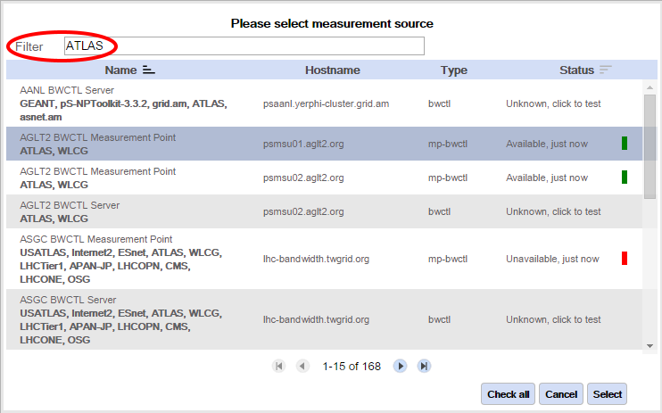Filtering services
Services can be ordered by their name or their status/reachability in the Service Pickup dialog window. Clicking icon in the Name column header will sort services by name descendingly or ascendigly. Clicking icon in the Status column will sort services cycling through three modes of operation:
- Available first - services reachable to the perfsonarUI are displayed first
- Unavailable first - services not reachable to the perfsonarUI are displayed first
- Unknown first - services not yet tested or that don’t support testing reachability are displayed first.
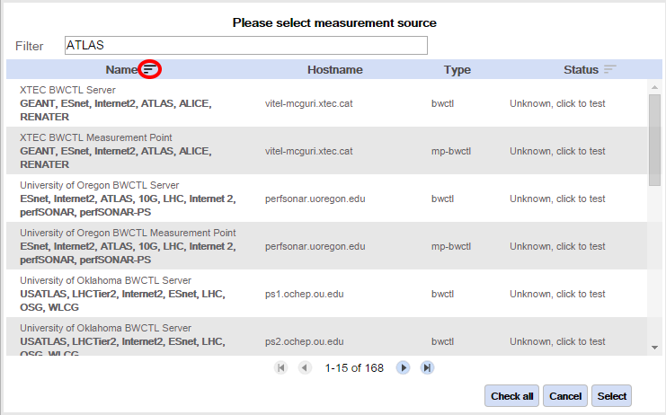Ordering services by name
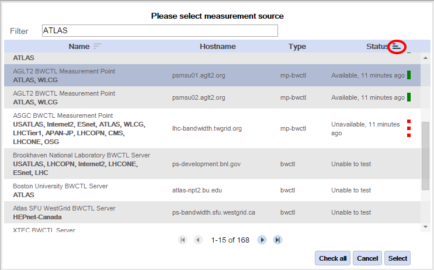Ordering services by status/reachability
See also
See section Verifying Service Reachability for on checking service status/reachibility.
perfsonarUI currently supports the visualization of three types of historical measurements. These are link utilization data, one way delay, jitter, one-way packet loss and traceroute for a path and measured achievable throughput for a path. For each measurement type, there is a dedicated plugin within the Access section of the navigation panel. Each of the plugins will be described in more detail below.
On the Access section of the navigation panel of the perfsonarUI you will see Access utilization data link. Click this item to bring up the link utilization plugin in the content panel on the right side of the application screen. This plugin is used to visualize data from the perfSONAR RRD MA and is also able to retrieve data from perfSONAR BUOY MA and the old perfSONAR Toolkit SNMP MA. Initially the page has content with no data:
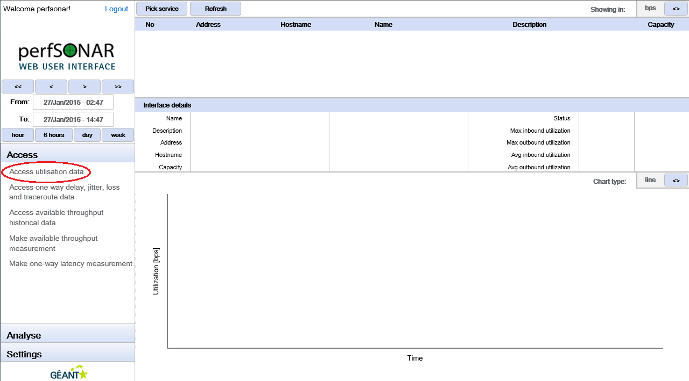The plugin panel is divided into several segments. On the very top are controls for the selection of a measurement archive service to be queried (1) and for the type of values to be displayed in the results (utilization can be shown in bps or % of capacity). Next is a list of interfaces for which data is available in the measurement archive (2). Below that is a panel showing details of selected interfaces (3) and finally, the bottom part of the panel is reserved for the graph showing inbound and outbound link utilization for the selected time window (4).
Then it is necessary to select a measurement archive to query. This is achieved by clicking on the Pick service button in the top left corner, which brings up the service selection dialog.
See also
See section Selecting Service for information on the Service pickup dialog.
When the service is selected, a request is sent to the measurement archive to fetch a list of all the interfaces for which available measurements exist within that archive. The archive’s response is converted into a list of available interfaces. This list can be filtered by name or description. To do this, the user simply clicks on the Name or Description labels in the list header and the labels turn into input fields.
Once a desired interface is located and selected by clicking in the list, a request is sent to the measurement archive to provide measurement values for that interface. When the archive responds, the data is presented to the user in the details panel and on the graph below it. The resulting screen may look similarly to:
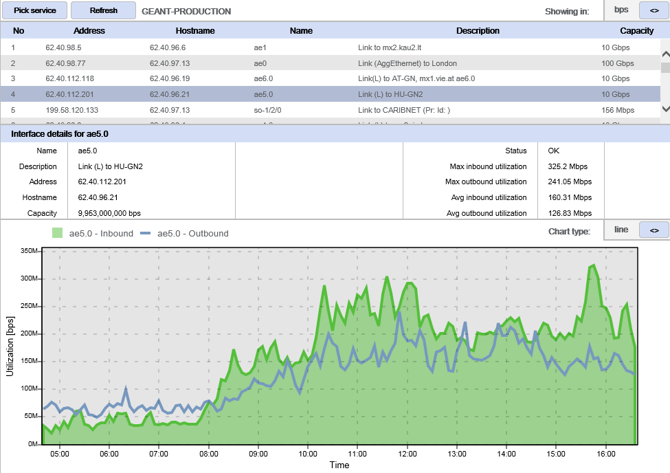In the details panel interface name, description, address, domain and capacity are shown, alongside the status, maximum and average utilizations for each direction. The graph shows how the utilization changed over time in the selected time window. There are two elements on the graph. The green, filled area represents the inbound utilization while the blue line represents the outbound utilization. The graph provides the following functionalities:
- Graph zooming: The graph can be zoomed in by clicking a mouse and dragging it to mark a selection area.
- Comparison of link utilization in graph: It is possible to compare the utilization of two interfaces within the same time window. This is done by simply clicking on another interface from the list while there is already an active selection.
The data generated by running OWAMP tests are stored within esmond or perfSONAR HADES MA service. PerfsonaUI displays OWAMP archived tests in Access one way delay, jitter, loss and traceroute data plugin accessed from its menu item in the left navigation panel. Initially the page loads with no data. There are three main sections:
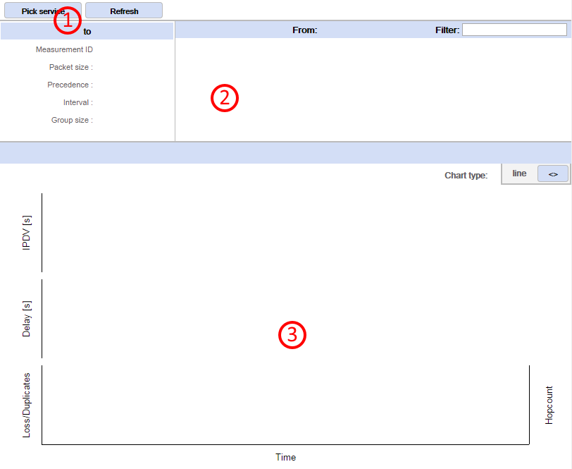
- Service selection control located on top of the plugin panel;
- Measurement selection panel;
- The result panel with graphs in the bottom part of the plugin.
In order to retrieve archived OWAMP data:
Note
Use filters to quickly find desired archive
See also
See section Selecting Service for information on the Service pickup dialog.
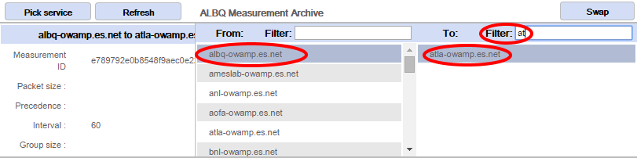
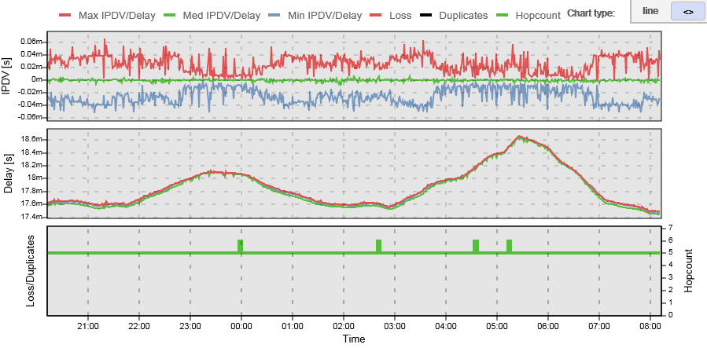The resulting graph has 3 segments. The first one shows IPDV (jitter). The second one shows Delay. Both of these segments show three sets of values, minimum, median and maximum. The third segment shows packet Loss/duplicates (values shown on the left side of the graph) as well as Hopcount for the route used (values shown on the right side of the graph). This graph can be zoomed to a particular segment.
The data set showing the hop count on the third graph segment (in green color) is interactive:
- Click on it at a certain point in time and route comparator panel becomes visible. On the left side of this panel, the route that was active at a point in time where the user clicked is shown.
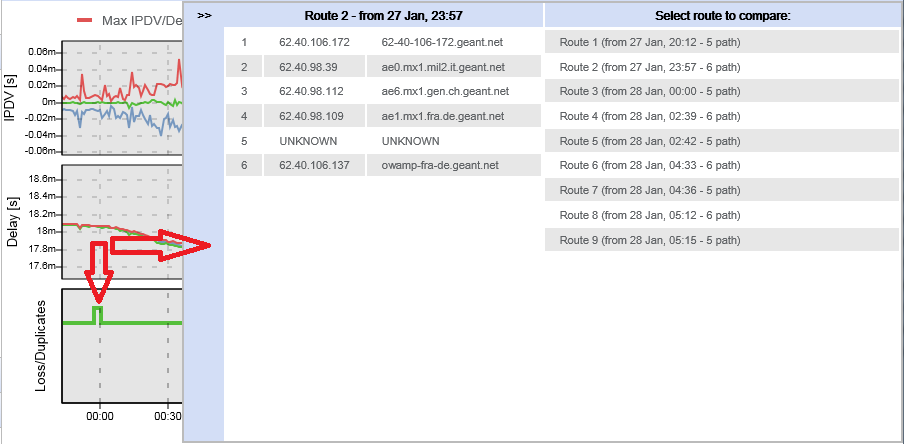
- Individual hops are shown with their IP address and hostname. On the right side of the panel named Select route to compare, a list of all the different routes that were active during the entire time window is shown. Click on nay of it to compare one of these routes to the primary one (on the left).
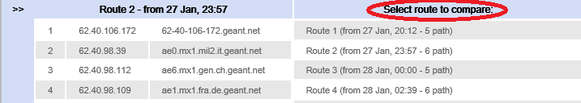
- The two routes are put side by side so that possible differences can be easily spotted. By clicking on the << the user can go back to the list of all available routes and choose a different one for further comparison. A click on the >> closes the route comparator panel altogether.
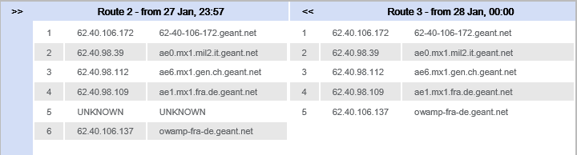
It is possible to display reverse OWAMP measurement data if correlated data exists in the service. By clicking the Swap button, if supported by service, previously selected destination point would be set as a source point and the previous source point would be set in the Filter input. If only one point is possible after applying the filter then this point is set as the destination and the service is queried for the data.
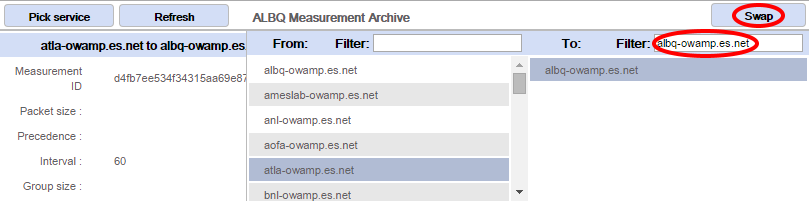
Note
IPDV (jitter) data are available only for HADES archives. Route information is available only for some measurement pairs in esmond archives.
The Access available throughput historical data plugin enables the user to visualize historical measurement tests performed between BWCTL nodes and stored within esmond or a perfSONAR SQL MA. Initially the page loads with no data.
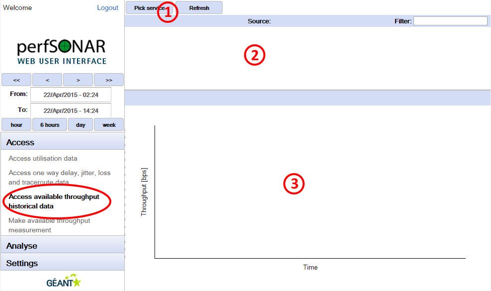
- There is a service selection control located on top of the plugin panel;
- Measurement selection panel;
- The result panel with graphs in the bottom part of the plugin.
To do this, the user must do the following:
When a source and destination points are selected, the measurement archive is queried for that particular measurement. The results from such a query are presented on a graph in the bottom part of the plugin panel (3).
In order to retrieve archived BWCTL data:
Note
Use filters to quickly find desired archive
See also
See section Selecting Service for information on the Service pickup dialog.
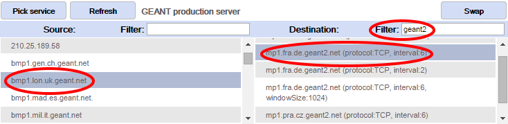
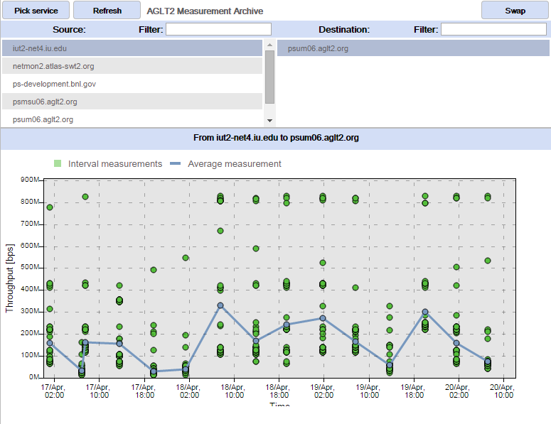
The graph represents a series of individual available throughput tests with identical parameters, which were performed in the past. Each of these tests consists of more than one value represented by a dot. One distinct value is the average achieved throughput shown as a blue dot. There are also several values which represent throughput achieved during reporting intervals (green dots). For example, if a single test lasted 30 seconds and had a reporting interval of 6 seconds this means that there will be 5 reporting interval values (one every 6 seconds of the test) and one average value. Each of the individual tests can be clicked and viewed in more detail.
To view details of a single test click on a dot belonging to that test. The detailed result will be displayed in a separate panel:
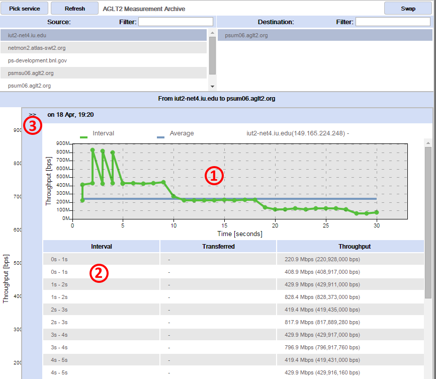
That single measurement is now presented differently (1), which allows the user to see how it progressed over time. Along with the graph there is also a numerical representation of the measurement data. A table below the graph specifies the transferred volume of data and the achieved throughput for each reporting interval (2). Clicking on << button in left corner (3) takes user back to previous screen.
perfsonarUI allows users to make on-demand measurements using perfSONAR measurement points. In the current version, available throughput and one-way latency measurements are supported.
Through perfsonarUI, it is possible to request an achievable throughput measurement between two perfSONAR BWCTL MPs or between a perfSONAR BWCTL MP and another bwctl only endpoint. In order to make available throughput measurement:
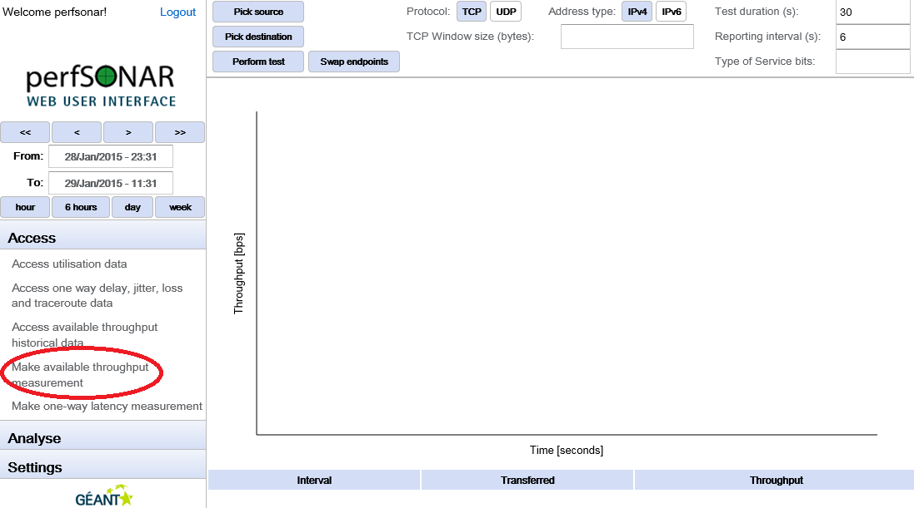
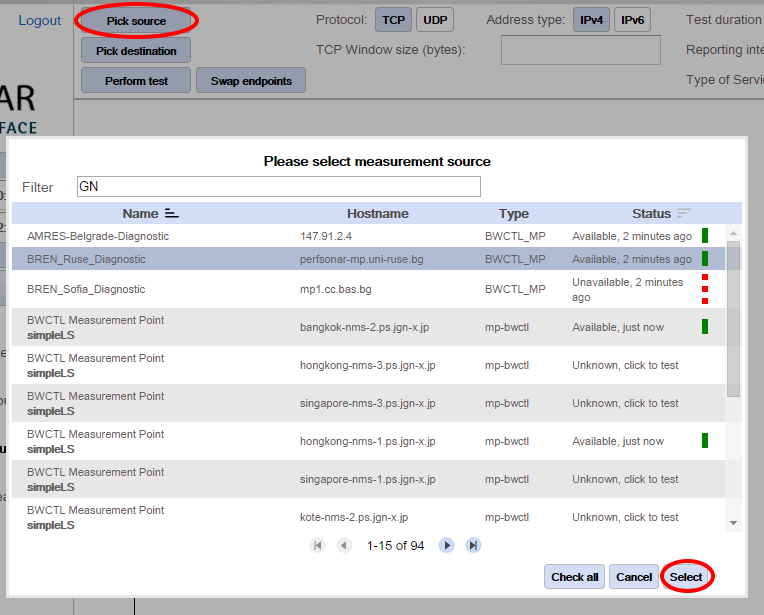See also
See section Selecting Service for information on the Service pickup dialog including service filtering.
Warning
It is mandatory to select a perfSONAR BWCTL MP as one endpoint (a service configured with BWCTL_MP type in configuration section). The other endpoint could be either a perfSONAR BWCTL MP or another BWCTL endpoint (a service configured with BWCTL type in configuration section).
There are several parameters for a BWCTL MP on-demand test:
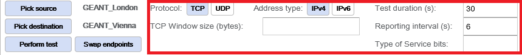
- Protocol
- This parameter specifies protocol used. The possible choices are TCP or UDP. By default TCP is selected. For each protocol, additional parameters can be set.
- TCP windows size
- TCP window size, in bytes, can be set when using the TCP protocol but it is not mandatory.
- UDP buffer size
- This parameter sets buffer size, in bytes for UDP protocol but which is not mandatory.
- Maximum bandwidth
- This parameter limits maximum bandwidth, in Mbps, for UDP protocol only, which is not mandatory. The default value is 1 Mbps.
- Address type
- Use this selection to choose whether IPv4 or IPv6 is used for testing. By default, IPv4 is selected.
- Test duration
- Use this parameter to specify the test duration is seconds. This parameter is mandatory.
- Reporting interval
- Use this parameter to specify the reporting interval in seconds. The interval specifies that the service should attempt to run a throughput test every interval seconds. This parameter is mandatory.
- Type of Service bits
- This parameter sets ToS bits in sent measurement packets, but it is not mandatory.
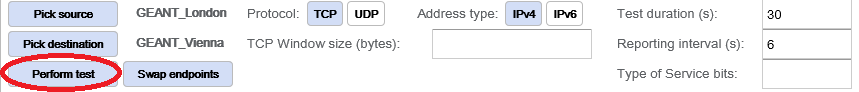
Once all the parameters are set (or defaults were used) and the test was requested, it may take some time for the result of the test to appear in the browser. If the test, for example, lasts 30 seconds it will take at least 30 seconds for the test results to show.
The results of the test are shown on a graph and in a table. The graph has two datasets, one representing throughput values at the reporting intervals (green) and one representing the average throughput (blue). The table below the graph shows the volume of data transferred and the achieved throughput for each interval, as well as the average values.
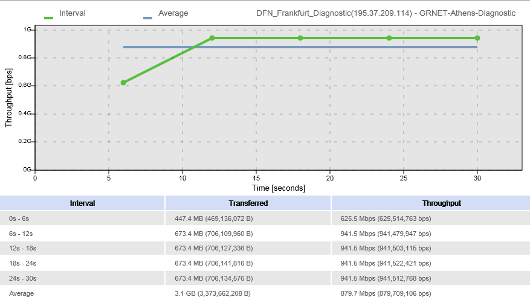
A test in the reverse direction can quickly be requested by clicking on the Swap endpoints button, which substitutes source and destination and then by clicking on the Perform test button.
Through perfsonarUI, it is possible to request a one-way latency measurement between two perfSONAR OWAMP MPs or between a perfSONAR OWAMP MP and another owamp only endpoint. To do this the user should use the Make one-way latency measurement plugin. In order to make one-way latency measurement:
Click Make available throughput measurement in the left navigation panel. Initially the page loads with no data.
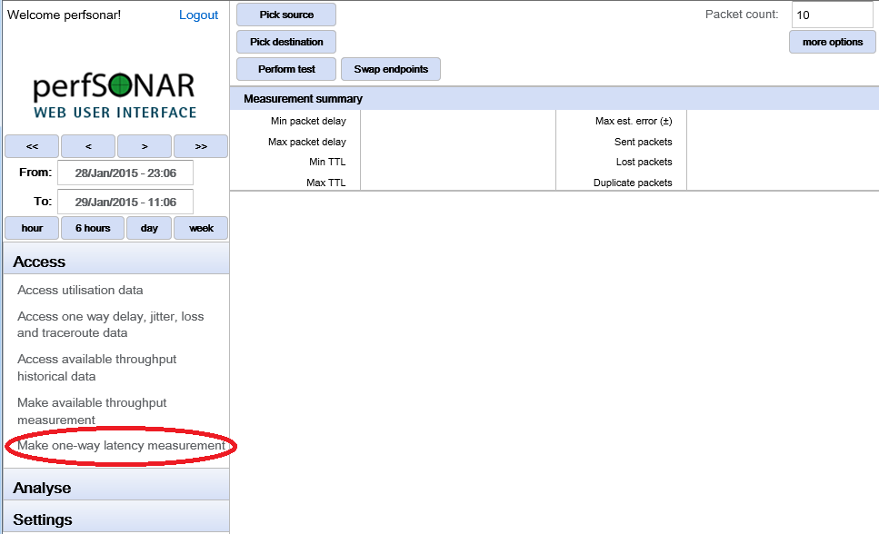
Before the measurement is requested, the user must select measurement endpoints and set measurement parameters. Endpoints are selected by using the Pick source and Pick destination buttons and the selection dialogs that they bring up. It is mandatory to select a perfSONAR OWAMP MP as a source endpoint (a service configured with OWAMP_MP type in configuration section). The destination could be either a perfSONAR OWAMP MP or another owamp only endpoint. Once the endpoints are selected, the user has two choices. To perform the test with default parameters, by clicking on the Perform test, or to adjust the test parameters first and then request the test. A full list of parameters can be displayed by clicking on the more options button.
There are several parameters for OWAMP MP on-demand tests:
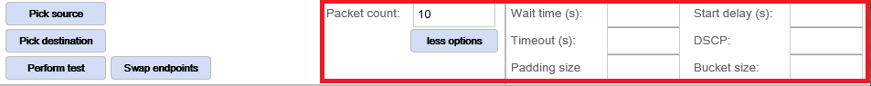
- Packet count
This parameter specifies the number of packets being sent.
- Wait time
Mean average wait time between packets. Not mandatory. The default is 100ms.
- Timeout
Maximum time to wait for a packet before declaring it lost. Not mandatory.
- Padding size
Size of the padding added to each packet. Not mandatory.
- Start delay
Time to wait before executing the test. Not mandatory. Defaults to 0.
- DSCP
DSCP value for ToS byte. Not mandatory. Defaults to 0x00.
- Bucket size
Bucket size for histogram calculations. Not mandatory.
Note
By default, Packet count is set to 10.
Once all the parameters are set (or defaults were used) and the test was requested, it may take some time for the result of the test to appear in the browser.
The results of the test are shown numerically and graphically. In the lower part of the screen, delay and estimated measurement error are shown for each packet. One bar of the graph represents one packet of the sequence. If the colour of the bar is green then the packet was received correctly. If the colour is yellow then a duplicated packet was detected. If the colour is red then the packet was lost. In the table above the graph, statistics of the measurement are shown. These statistics include minimum and maximum packet delay, minimum and maximum TTL values, maximum estimated error, total number of packets, number of lost packets and number of duplicate packets.
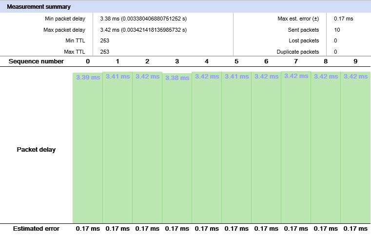
A test in the reverse direction can quickly be requested by clicking on the Swap endpoints button, which substitutes source and destination and then by clicking on the Perform test button.
Through perfsonarUI, it is possible to perform a traceroute between a perfSONAR MDM traceroute MP and any other perfSONAR MDM service (MP or MA). To do this the user should use Perform traceroute plugin.
Note
This plugin is disabled be default. Refer to Enabling and disabling plugins chapter of Installation Guide on steps how to enable it.
In order to make traceroute measurement:
Using historical data from multiple measurement archives, perfsonarUI can visualize the path segment utilization for a given traceroute output. This is done using the Analyse path segments plugin of the Analyse section in the navigation panel.
In order to troubleshoot a path:
Click Analyse path segments in the left navigation panel. Initially the page loads with no data.
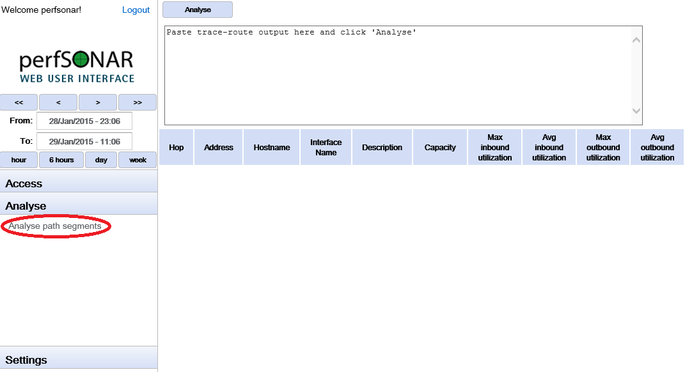
In the top part of the plugin, there is a text box where the user can paste a traceroute output. The UI was tested using outputs from both Windows and Linux systems. Once the traceroute output is provided, the user clicks the Analyse button in the top left corner of the plugin.
The UI will try to find the utilization data for each link in the path by querying all of the configured RRD_MA services. This process can be slow, as the UI waits for responses from every single MA.
All the segments of the path are presented in a table below the input text box. For each path segment, it presents this set of data: hop, IP address, hostname, interface name, interface description, link capacity and maximum as well as average inbound and outbound link utilization for the specified time period. If measurements for a link cannot be found in any of the configured RRD MAs (or SNMP MAs), only information found in the traceroute output is shown (hop, IP and hostname).
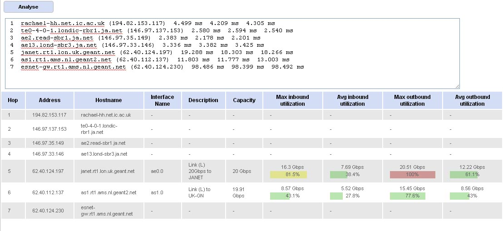
The Settings section of the navigation panel contains a link to the Configure service list panel, which allows the user to configure the list of services (measurement archives and measurement points) available to the perfsonarUI.
To configure the list of services, perform the following steps:
- LegacyLS
- This tab contains the list of services found by the legacy MDM lookup service. This list can be modified by changing the bootstrap URL from which services are being fetched. By clicking the Set button, the new URL is saved and services fetched from that bootstrap URL are displayed.
- SimpleLS
- This tab contains the list of services found by the simpleLookupService. This list can be modified by changing the bootstrap URL from which services are being fetched.
- Internal services
- This default list contains known perfSONAR MPs and MAs and is supplied with the application. It cannot be changed directly through the application (for information about changing this list refer to related chapter of Installation Guide)
- Local services
- This list is local to that specific installation of perfsonarUI and can be modified by adding and removing services.
Note
To activate or deactivate a specific type of list, click a selection box next to its header. All services contained within the tab that was activated will be visible in service pickup dialogs.
When desired service is not present in the lookup service or within default list of services packaged with perfsonarUI you can add desired service using Local services tab. To add a local service to the list make sure the Use local services option is selected. Then:
- Name
- Use this to assign the recognizable name to perfSONAR service entry.
- Group
- The name of the group this service belongs to. You may group services according to your own criteria.
- URL
- The service URL of the perfSONAR service as obtained during service installation and the same as what is registered to the Lookup Service. For MP and MA services, the URL should be the full web service URL. For example, http://hostname:8090/services/MP/BWCTL is a typical service URL for a BWCTL MP and http://hostname:8080/perfsonar-java-sql-ma/services/MeasurementArchiveService is a typical service URL for a SQL MA. For pS Performance Toolkit BUOY Measurement Archive services, the URL should be similar to http://hostname:8085/perfSONAR_PS/services/pSB. BWCTL and OWAMP endpoints which are not MPs should have URLs that contain the hostname or IP address of the service and the port that the measurements should use. For example, http://hostname:4823 is a working URL for BWCTL endpoints.
- Type
Use this parameter to set a type of perfSONAR service added. The possible settings are:
- BWCTL
- Corresponds to a bwctl only endpoint as part of the perfSONAR Toolkit.
- BWCTL_MP
- Corresponds to the perfSONAR BWCTL MP.
- BWCTL_MA
- Corresponds to the old perfSONAR SQL MA.
- BWCTL_PS
- Corresponds to perfSONAR BUOY MA containing throughput measurements.
- HADES_MA
- Corresponds to perfSONAR HADES MA.
- OWAMP
- Corresponds to a owamp only endpoint as part of the perfSONAR Toolkit.
- OWAMP_MP
- Corresponds to perfSONAR OWAMP MP
- OWAMP_PS
- Corresponds to perfSONAR Toolkit BUOY MA containing latency measurements.
- RRD_MA
- An old perfSONAR Toolkit SNMP MA.
- TRACERT
- Corresponds to perfSONAR Traceroute MP.
Use the Edit and Remove buttons beside each entry in the list table for the modification or removal of that particular list entry.
It is possible to secure the access to perfsonarUI through the authentication against SAML compatible identity providers. The following instructions use as an example the identity provider Feide OpenIdP, Felles Elektronisk IDEntitet, a free and open identity provider (IdP) created for academic purposes in Norway. Creating a new account on Feide OpenIdP is free and has no restriction. However, using Feide OpenIdP is discouraged in production, and you should use your home organization’s IdP. Follow these steps:
Firstly, IdP metadata is needed. Every IdP advertises its own metadata at a well-known URL. For example, the metadata for the GÉANT Global IdP is located at https://gidp.geant.net/simplesamlphp/saml2/idp/metadata.php. The Feide IdP metadata is located at https://openidp.feide.no/simplesaml/saml2/idp/metadata.php. Save the metadata as IdP.xml, it will be needed in the following step.
In /usr/share/tomcat6/.oiosaml or in the provided ZIP file, locate the metadataSPSPMetadata.xml file. This is the file that has to be uploaded to your home organization’s IdP. In the case of the GÉANT IdP, you have to contact the administrators of the IdP at edugain-ot@geant.net. With the Feide OpenIdP, you can register perfsonarUI by yourself by uploading the metadata at https://openidp.feide.no/simplesaml/module.php/metaedit/edit.php
Copy all the files from /usr/share/tomcat6/.oiosaml to /home/tomcat/.oiosaml
Edit the file /home/tomcat/.oiosaml/oiosaml-sp.properties and set the value of the oiosaml-sp.assurancelevel parameter to 0.
Restart the Tomcat service with service tomcat6 restart or service tomcat7 restart, depending on which Tomcat version is installed.
When you get the confirmation from your home organization IdP administrators that registration is accepted - or after you upload your metadata to the IdP - you can test the authentication with this IdP by going to URL http://your_server_IP_address:8080/perfsonar-ui/ and choosing the Organizational Login button. After clicking the Organizational Login button, you will be redirected to the IdP authentication page where you can enter the credentials that your home organization has provided to you.